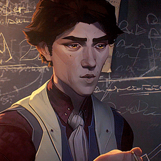
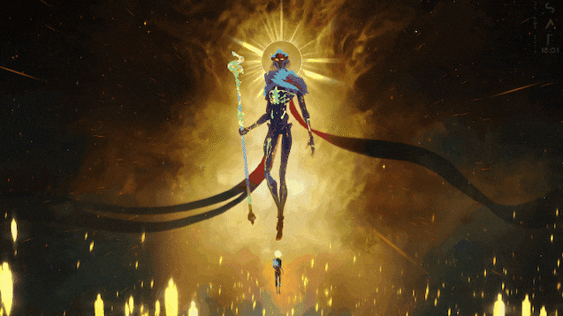

VIKTOR
 
First Appearance: Episode 2 - *Some Mysteries Are Better Left Unsolved*
Viktor is a brilliant inventor and scientist in Piltover, and a close ally to Jayce. Known for his expertise in hextech and his pursuit of scientific innovation, Viktor is driven by the desire to improve the world through his research. Despite his outward appearance as a calm and collected scholar, Viktor harbors a deep sense of personal struggle and an inner conflict regarding the ethical implications of his work.
As his story unfolds, Viktor's dedication to progress takes a darker turn as he becomes more focused on the potential of his inventions to change the world, leading him into moral ambiguity and raising questions about the price of progress. His journey is one of sacrifice and transformation, both personal and professional.